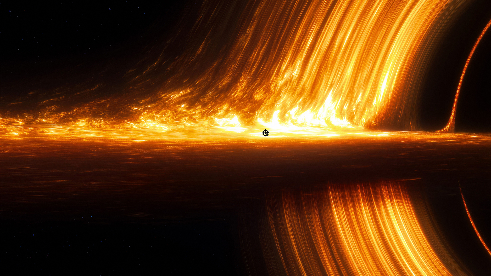
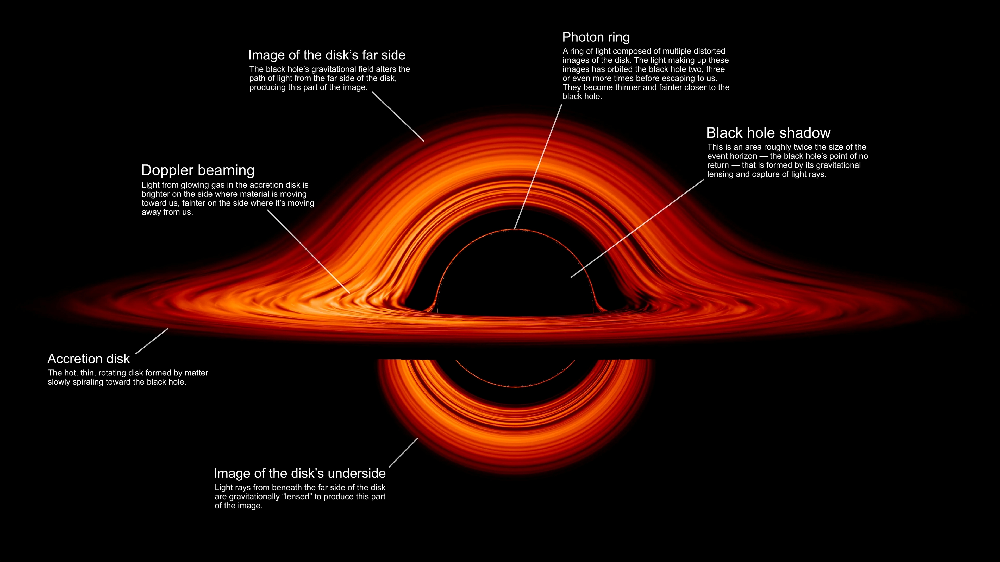

Black holes are among the most mysterious cosmic objects, much studied but not fully understood. These objects aren’t really holes. They’re huge concentrations of matter packed into very tiny spaces. A black hole is so dense that gravity just beneath its surface, the event horizon, is strong enough that nothing – not even light – can escape. The event horizon isn’t a surface like Earth’s or even the Sun’s. It’s a boundary that contains all the matter that makes up the black hole. There is much we don’t know about black holes, like what matter looks like inside their event horizons. However, there is a lot that scientists do know about black holes.
This artist’s concept portrays the supermassive black hole at the center of the Milky Way galaxy, known as Sagittarius A* (A-star). It’s surrounded by a swirling accretion disk of hot gas. The black hole’s gravity bends light from the far side of the disk, making it appear to wrap above and below the black hole. Several flaring hot spots that resemble solar flares, but on a more energetic scale, are seen in the disk. NASA’s James Webb Space Telescope has detected both bright flares and fainter flickers coming from Sagittarius A*. The flickers are so rapid they must originate very close to the black hole
Scientists classify black holes into several types based on their mass. Stellar black holes form from collapsing massive stars and usually have a mass several times greater than our Sun. Supermassive black holes are millions or billions of times more massive than the Sun and are found at the center of most galaxies, including our Milky Way galaxy. Intermediate black holes are thought to exist between stellar and supermassive black holes, although they are harder to detect. Another theoretical type is primordial black holes, which may have formed shortly after the Big Bang.
| TYPE | MASS RANGE | FORMATION | DESCRIPTION |
|---|---|---|---|
| Stellar BlackHoles | 5-100 times the mass of the Sun | Formed when massive stars collapse after a supernova explosion | The most common type of black hole found in the universe |
| Intermediate Blackholes | About 100-100,100 times the mass of the sun | Possibly formed by merging of smaller black holes | A rare type that lies between stellar and supermassive black holes |
| Super Massive Black holes | Millions to billions times the mass of the Sun | Found at the center of the most galaxies | Extremely large black holes that influence the structure and motion of galaxies |
| Primordial Black Holes | Can vary widely in size | Thought to have formed shortly after the big bang | A theoretical type that may have formed in the early universe due to the density fluctuations |
